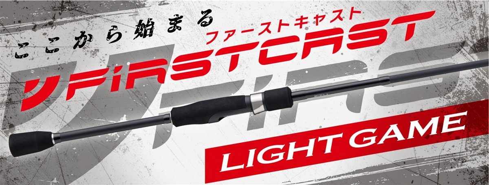
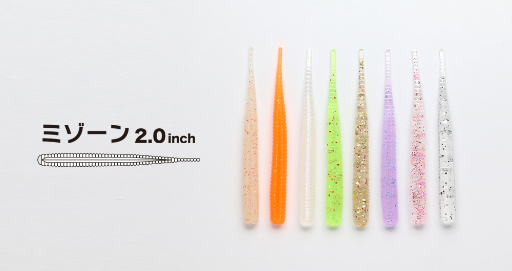
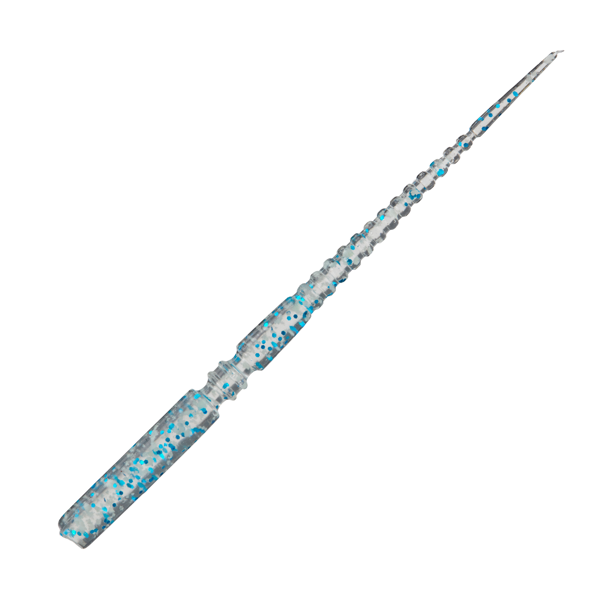
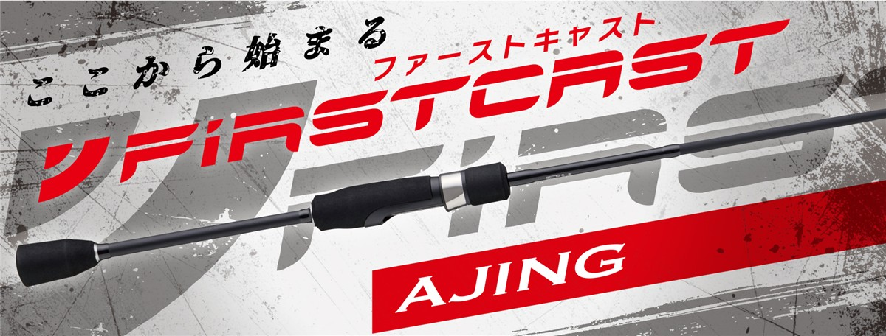

NEWファーストキャスト ライトゲームモデル
（NEW FIRSTCAST Light Game model）
NEWファーストキャスト ライトゲームモデル（NEW FIRSTCAST Light Game model）はMajor Craft（メジャークラフト）のライトゲームロッドです。
ショアルアーゲームロッドの定番ファーストキャストがリニューアルしたシリーズで、乗せ重視のソリッドティップと、感度重視のチューブラーの2モデルから、釣り方に合わせて選べます。
初級者から中級者まで満足できるコスパ最強ロッドで、はじめてのライトゲームを始めるのに最適の1本です。

画像出典:メジャークラフト公式HP
スペック
- メーカー
- Major Craft（メジャークラフト）
- タイプ
- ライトゲームロッド（スピニング）
- モデル数
- 2モデル
- 長さ
- 7'3"〜7'6"
- 継数
- 2ピース
- 対応ルアー
- 0.5〜10g
- ライン
- 1〜5lb
- PEライン
- 0.3〜0.6号
- 自重
- 83g〜87g
- アクション
- ファースト
- 価格
- 7,150円〜7,480円（税込）
- 発売
- 2026年10月
▼今すぐチェック
ファーストキャスト ライトゲームの特徴
ジグヘッド単体からプラグまで楽しめる、全2モデルのライトゲームロッド
-
初級者から中級者まで満足のコスパ最強ロッド
価格は税込7,150円から。手頃な価格ながら初級者から中級者まで満足できる内容で、はじめてのライトゲームを始めるのに最適の1本。
-
操作性を重視したブランクス
中弾性カーボンをメインクロスに採用。キャストのしやすさとルアーの操作性の良さを考えたブランクス設計になっている。
-
ライントラブルを減らすKガイド
富士工業製のKガイドフレームを採用。強さと軽さを両立し、ライントラブルも減らしている。
-
使い手を選ばないグリップ
握りやすさと操作性を重視した、バランスの良いグリップデザイン。リールシートはダウンロック。
ファーストキャスト ライトゲームの使い方
ジグヘッド単体を軽くキャストし、カウントダウンでレンジを探ります。
ゆっくり巻いて止める動きを繰り返し、アタリが出たレンジを丁寧に通すのが基本です。マイクロジグやプラグも使うならチューブラーを選びましょう。
ファーストキャスト ライトゲームがおすすめの人
アジやメバルなどのライトゲームを手軽に始めたい人に向いたシリーズです。
ジグヘッド単体がメインならソリッド、いろいろなルアーを使うならチューブラーが候補です。
軽いルアーを扱いやすいので、小さなアタリの魚が釣れる楽しさを味わえます。
軽いチニングにも使える
アジやメバルだけでなく、軽いチニングにも使えるモデルです。1本でライトゲームとチヌ狙いの両方を楽しめます。
使うルアーは、対応ルアーの重さ（0.5〜10g）に収まる軽めのものを選びましょう。
ワンポイント
迷ったら幅広いルアーを使えるFCLG-762L/Tがおすすめです。ジグヘッド単体に絞って楽しみたくなったら、FCLG-732L/Sを検討しましょう。
ファーストキャスト ライトゲームモデルの使い分け
| モデル | 長さ／対応ルアー／自重／価格（税込） | 得意な場面 |
|---|---|---|
| FCLG-732L/S | 7'3"／0.5〜10g／83g／7,150円 | 乗せ重視のソリッド。ジグヘッド単体に |
| FCLG-762L/T | 7'6"／0.5〜10g／87g／7,480円 | 初心者に一番おすすめ。感度重視のチューブラー。ジグ単・マイクロジグ・プラグに |
ソリッドティップは乗せ重視、チューブラーは感度と汎用性重視です。ジグ単以外も使うかどうかで選びましょう。
ファーストキャスト ライトゲームの番手別チェック
番手ごとの特徴と、購入先のリンクです。
FCLG-732L/S
7'3"／0.5〜10g／83g／7,150円
穂先が柔らかいソリッドティップを採用した、乗せ重視のモデルです。公式はジグヘッド単体のライトゲームにおすすめとしています。小さなアタリでも魚が違和感なく食い込みやすいので、常夜灯周りでアジやメバルをジグ単で狙う釣りに向いています。マイクロジグやプラグも使いたくなったら、762L/Tのほうが合わせやすくなります。
▼今すぐチェック
FCLG-762L/T
7'6"／0.5〜10g／87g／7,480円
初心者に一番おすすめしたいのがこの番手です。穂先の反発があるチューブラーで、公式はジグヘッド、マイクロジグ、プラグと幅広いルアーに対応するとしています。7フィート6インチで飛距離も出しやすく、アジやメバルに加えて軽いチニングまで1本で楽しめます。いろいろな釣りを試したい人は、まずこの番手を選びましょう。
▼今すぐチェック
▼今すぐチェック
あわせてチェックしたいアイテム
-

ミゾーン2.0 クリアブルー 詳細はこちら＞アジ・メバルなどライトゲーム全般に使える2.0インチのワーム。ジグ単で組み合わせやすい。
-

鰺道ワーム ゼロレジスト メジャークラフト 詳細はこちら＞同じメーカーのアジング向けワーム。ジグヘッド単体で組み合わせたい。
-

ファーストキャスト アジング メジャークラフト 詳細はこちら＞同じシリーズのアジング専用モデル。軽いジグヘッドに絞るならこちら。